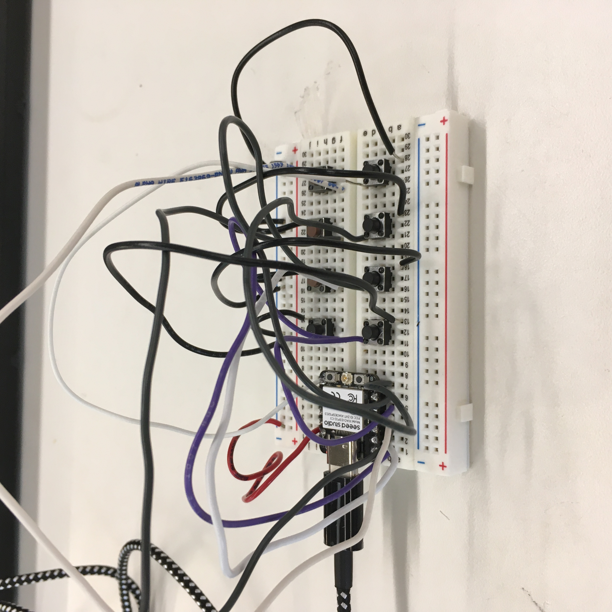
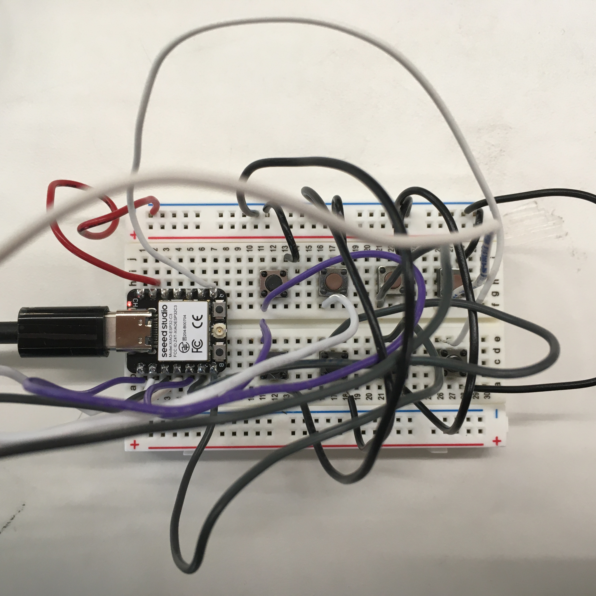

Assignments
Program the Microcontroller
For this assignment, I opted to gain a head start on my final project, or at least familiarity with it. I decided on developing the one handed keyboard/mouse. Since that project requires a good number of buttons, about 10, I wanted to figure out how to map those buttons to letters now rather than later. That way I could spend more time focusing on how to create the shell and circuits for the mouse/keyboard rather than the programming. Though I had doubts about my ability to do so, I wanted to see if I could get the majority of the chorded layout of the keyboard done beforehand, so I began programming eight buttons into a left handed artsey keybaord.. I referred to the left handed ARTSEY Layout when programming them.
|  |  |
.png)
|
To make the code much simpler to formulate, I separated the chords into classes. This will also allow for easy additions later on. The only downside to writing the code this way was that it took an hour to learn.
class Chord_1 {
int buttonpin;
char letter;
public:
Chord_1(int pin, char key)
{
buttonpin = pin;
pinMode(buttonpin, INPUT_PULLUP);
letter = key;
}
void Update() {
digitalRead(buttonpin);
if(buttonpin == LOW) {
Serial.println(letter);
}
}
};
class Chord_2 {
int buttonpin1;
int buttonpin2;
char letter1;
public:
Chord_2(int pin1, int pin2, char key1)
{
buttonpin1 = pin1;
pinMode(buttonpin1, INPUT_PULLUP);
buttonpin2 = pin2;
pinMode(buttonpin2, INPUT_PULLUP);
letter1 = key1;
}
void Update() {
digitalRead(buttonpin1);
digitalRead(buttonpin2);
if((buttonpin1 == LOW) && (buttonpin2 == LOW)) {
Serial.println(letter1);
}
}
};
//and so forth up to Chord_4
I then assigned pin numbers and letters to the different chords.
Chord_1 a1(D0, s);
Chord_1 a2(D1, t);
Chord_1 a3(D2, r);
Chord_1 a4(D3, a);
Chord_1 a5(D4, o);
Chord_1 a6(D5, i);
Chord_1 a7(D6, y);
Chord_1 a8(D7, e);
Chord_2 b1(D4, D7, b);
Chord_2 b2(D6, D7, c);
Chord_2 b3(D2, D3, f);
Chord_2 b4(D1, D2, g);
Chord_2 b5(D5, D7, h);
Chord_2 b6(D0, D1, j);
Chord_2 b7(D4, D6, k);
Chord_2 b8(D4, D5, n);
Chord_2 b9(D5, D6, u);
Chord_2 b10(D0, D2, v);
Chord_2 b11(D0, D3, w);
Chord_3 c1(D1, D2, D3, d);
Chord_3 c2(D5, D6, D7, l);
Chord_3 c3(D4, D5, D6, m);
Chord_3 c4(D4, D5, D7, p);
Chord_3 c5(D0, D1, D3, q);
Chord_3 c6(D0, D1, D2, x);
Chord_4 d1(D0, D1, D2, D3, z);
However, it appeared I did something wrong in defining the letters. The error messages explained it was the problem, but according to my understanding at the time, since those were characaters, and I had set that part of the function to be meant for characters, it seemed completely correct to me.
.png)
I did some further research on the char variable and found that characters require '' around them. I added this to the code and it verified without any errors.
At this point, I felt confident in the code working. However, I had a fear that chords would overlap: pressing two keys for a Chord_2 will simultaneously produce the Chord_1 equivalents of each respective key. Before testing the code on the keyboard, I decided to try and prevent this error in advance. I figured I could add more AND conditions that would prevent the button from pressing unless only those specific keys, no others, were pressed. The result was a lot of variables and a suspicion that there was an easier way, but I feel this may work as a good format that allows for more key assignments later on.
//Classes are now behomeths
class Chord_1 {
int buttonpin;
int extra;
int extra1;
int extra2;
int extra3;
int extra4;
int extra5;
int extra6;
char letter;
public:
Chord_1(int pin, char key, int e, int e1, int e2, int e3, int e4, int e5, int e6)
{
buttonpin = pin;
pinMode(buttonpin, INPUT_PULLUP);
extra = e;
pinMode(extra, INPUT_PULLUP);
extra1 = e1;
pinMode(extra1, INPUT_PULLUP);
extra2 = e2;
pinMode(extra2, INPUT_PULLUP);
extra3 = e3;
pinMode(extra3, INPUT_PULLUP);
extra4 = e4;
pinMode(extra4, INPUT_PULLUP);
extra5 = e5;
pinMode(extra5, INPUT_PULLUP);
extra6 = e6;
pinMode(extra6, INPUT_PULLUP);
letter = key;
}
void Update() {
digitalRead(buttonpin);
if((buttonpin == LOW) && (extra == HIGH) && (extra1 == HIGH) && (extra2 == HIGH) && (extra3 == HIGH) && (extra4 == HIGH) && (extra5 == HIGH) && (extra6 == HIGH)) {
Serial.println(letter);
}
}
};
//and the instances are sentences
Chord_1 a1(D0, 's', D1, D2, D3, D4, D5, D6, D7);
After uploading the code to the microcontroller, I soon discovered that none of the buttons did anything. I tested for voltage and current with the multimeter to make sure that none of the electrical components were off. The problem lied in my code. Bobby revealed to me that I had been trying to read the button instead of its value. The new if statements followed this format:
void Update() {
if((digitalRead(buttonpin) == LOW) && (digitalRead(extra) == HIGH) && (digitalRead(extra1) == HIGH) && (digitalRead(extra2) == HIGH) && (digitalRead(extra3) == HIGH) && (digitalRead(extra4) == HIGH) && (digitalRead(extra5) == HIGH) && (digitalRead(extra6) == HIGH)) {
Serial.println(letter);
}
}
After Bobby's help, I was finally able to type a single character. For whatever reason, the code only allowed for a single button press, no longer responding to any clicks past the first one. Multiple occurences was another problem, but I pushed that off to focus only on getting the keystrokes to work. However, it turns out that they were the same problem. The keystrokes were working, but I could not tell because there were so many extra instances of characters from a single press. To fix this, I added a delay system that prevented the code from repeating immediately.
//Variables
long initialDelay;
long secondaryDelay;
unsigned long previousMillis;
//Defining Variables
initialDelay = 100;
secondaryDelay = 150;
previousMillis = 0;
//Defining currentMillis
unsigned long currentMillis = millis();
//Avoiding the delay tag. Implemented into the if statement of the Update loop.
(currentMillis - previousMillis >= initialDelay)
(currentMillis - previousMillis >= secondaryDelay)
The reason for the separate delays is because I was experimenting with trying to solve another problem: pressing more than one key resulted in zero responses. My hypothesis is that the first "if" statement is looping and preventing any of the chords from running. So for the assignment, I present a modest attempt at a keyboard. I will be back during final project construction to fix this issue.
class Chord_1 {
int buttonpin;
int extra;
int extra1;
int extra2;
int extra3;
int extra4;
int extra5;
int extra6;
char letter;
long initialDelay;
long secondaryDelay;
unsigned long previousMillis;
public:
Chord_1(int pin, char key, int e, int e1, int e2, int e3, int e4, int e5, int e6)
{
buttonpin = pin;
pinMode(buttonpin, INPUT_PULLUP);
extra = e;
pinMode(extra, INPUT_PULLUP);
extra1 = e1;
pinMode(extra1, INPUT_PULLUP);
extra2 = e2;
pinMode(extra2, INPUT_PULLUP);
extra3 = e3;
pinMode(extra3, INPUT_PULLUP);
extra4 = e4;
pinMode(extra4, INPUT_PULLUP);
extra5 = e5;
pinMode(extra5, INPUT_PULLUP);
extra6 = e6;
pinMode(extra6, INPUT_PULLUP);
letter = key;
initialDelay = 100;
secondaryDelay = 150;
previousMillis = 0;
}
void Update() {
unsigned long currentMillis = millis();
if((digitalRead(buttonpin) == LOW) && (digitalRead(extra) == HIGH) && (digitalRead(extra1) == HIGH) && (digitalRead(extra2) == HIGH) && (digitalRead(extra3) == HIGH) && (digitalRead(extra4) == HIGH) && (digitalRead(extra5) == HIGH) && (digitalRead(extra6) == HIGH) && (currentMillis - previousMillis >= initialDelay)) {
if((digitalRead(extra) == LOW) || (digitalRead(extra1) == LOW) || (digitalRead(extra2) == LOW) || (digitalRead(extra3) == LOW) || (digitalRead(extra4) == LOW) || (digitalRead(extra5) == LOW) || (digitalRead(extra6) == LOW) && (currentMillis - previousMillis >= secondaryDelay)) {
break;
}
else {
Serial.print(letter);
previousMillis = currentMillis;
}
}
}
};
Chord_1 a1(D0, 's', D1, D2, D3, D4, D5, D6, D7);
Chord_1 a2(D1, 't', D0, D2, D3, D4, D5, D6, D7);
Chord_1 a3(D2, 'r', D0, D1, D3, D4, D5, D6, D7);
Chord_1 a4(D3, 'a', D0, D1, D2, D4, D5, D6, D7);
Chord_1 a5(D4, 'o', D0, D1, D2, D3, D5, D6, D7);
Chord_1 a6(D5, 'i', D0, D1, D2, D3, D4, D6, D7);
Chord_1 a7(D6, 'y', D0, D1, D2, D3, D4, D5, D7);
Chord_1 a8(D7, 'e', D0, D1, D2, D3, D4, D5, D6);
void setup() {
// put your setup code here, to run once:
Serial.begin(9600);
}
void loop() {
// put your main code here, to run repeatedly:
a1.Update();
a2.Update();
a3.Update();
a4.Update();
a5.Update();
a6.Update();
a7.Update();
a8.Update();
}